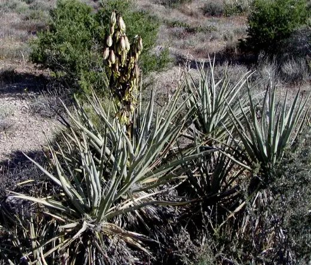

Wild fruit · Jul–Sep
Banana yucca
Yucca baccata
Also called Banana yucca
Banana yucca is a wild fruit you can forage from July to September in Southwest. Rosettes of stiff spear leaves; fat green banana-shaped fruit.

When is banana yucca in season in the United States?
Banana yucca is usually in season July to September. Timing shifts with weather, latitude and altitude.
Where does banana yucca grow in the United States?
Banana yucca grows in Arizona, Nevada, New Mexico, Texas, Utah. Regions: Southwest.
How do you recognise banana yucca?
Rosettes of stiff spear leaves; fat green banana-shaped fruit.
How do you harvest banana yucca?
Pick only fully ripe fruit that comes away easily, into a shallow container so it doesn't crush. Leave plenty on the plant for birds and wildlife.
How do you eat banana yucca?
Fruit roasted; flowers boiled.
How do you store banana yucca?
Dry roasted fruit.
What is banana yucca good for?
Calories.